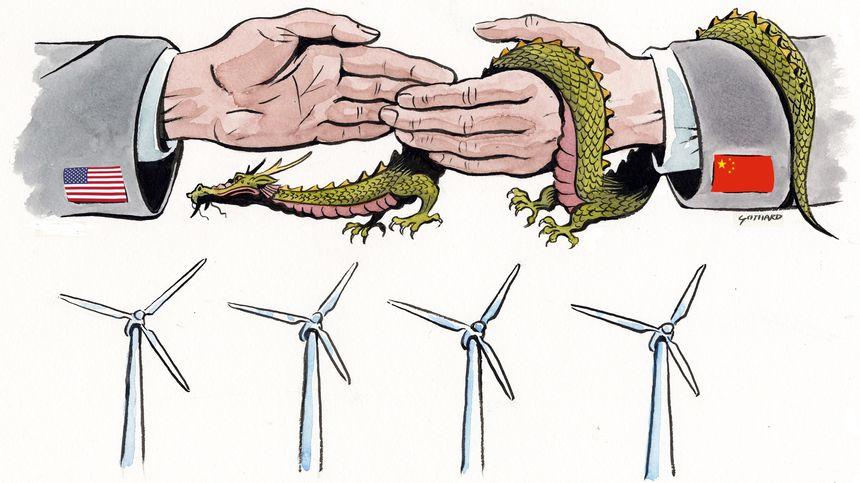

| 时间 | 分类 | 标题 | 副标题 | 正文 | 图片 |
|---|---|---|---|---|---|
| 2022-01-17 18:03:00 | Opinion | Biden Plays Capture the Federal Reserve | Sarah Bloom Raskin wants to politicize Fed bank supervision, especially on climate. | ||
| 2022-01-17 18:02:00 | Opinion | Washington Cashes In on Inflation | Individual income tax receipts rose 55% in the first fiscal quarter. | ||
| 2022-01-17 18:01:00 | Opinion | Cashiering the Presidential Debate Commission | The party candidates can negotiate over times, terms and moderators. | ||
| 2022-01-17 18:01:00 | Opinion | Eric Adams’s Charter School Opportunity | How the new mayor can make his mark on New York education. | ||
| 2022-01-17 17:26:00 | Opinion | A Politicized Fed Endangers the Economy | The central bank can’t deliver price stability if it’s distracted by climate change and social justice. | ||
| 2022-01-17 17:25:00 | Opinion | Herd Immunity Is Over—Long Live Superimmunity | The Omicron wave will leave most people with potent and durable protection against Covid. | ||
| 2022-01-17 17:24:00 | Opinion | Should a Religious Flag Fly Over a Government Building? | The Supreme Court takes up a case that could further undermine the ‘Lemon test’ that prohibits government-religion interaction. | ||
| 2022-01-17 17:23:00 | Opinion | Congress Treats Bitcoin Like Stacks of Cash | A new federal law mandates reporting transactions of more than $10,000. Why? | ||
| 2022-01-17 17:22:00 | Books & Arts | ‘Grief’ Review: What We Learn From Loss | The experience of grief is a near-universal human experience. But philosophers have held it at arm’s length. | ||
| 2022-01-17 17:21:00 | Opinion | Notable & Quotable: Ben Sasse on Eliminating the Filibuster | ‘You will ensure that this body, too, ends up consumed by demagogues, conspiracists and clowns’ | ||
| 2022-01-17 16:54:00 | Markets | Credit Suisse’s António Horta-Osório Lost Board Support Over Covid-19 Rules Breach | The chairman’s jet use also raised concerns, with some board members fearing he lacked credibility to fix what had come to be seen as the bank’s broken culture | He came to fix Credit Suisse Group AG’s broken culture. Then he became part of the problem. António Horta-Osório was hoping for a slap on the wrist Sunday from the Credit Suisse board for breaking coronavirus quarantine rules on trips to events, according to people familiar with his departure. Instead, he had to leave his job as the bank’s chairman for not upholding the high standards he set when joining Credit Suisse eight months ago. |
|
| 2022-01-17 16:52:00 | Business | U.S. Airlines Say Further 5G Delay Needed to Avoid Flight Disruptions This Week | Carriers say current FAA stance would ground significant portion of their fleets; cellular companies have disputed flight-safety risks | The chief executives of major passenger and cargo airlines said there could be significant flight disruptions when new U.S. 5G service goes live this week, unless implementation of the wireless service within two miles of major airport runways is delayed. The outlook had worsened for flight disruptions from the planned rollout this week of new high-speed wireless services, the airline executives said Monday in a letter to U.S. officials. |
|
| 2022-01-17 13:00:00 | Opinion | Anti-Semitism and Double Standards | Politicians should disavow Islamists and white nationalists in equal measure. | ||
| 2022-01-17 12:59:00 | Opinion | Biden Goes for Broke. He’s Broke. Now What? | He could still push for bipartisan solutions, but his divisive first year makes it much harder. | ||
| 2022-01-17 12:01:00 | Opinion | Not So Easy to Revive the U.S. Nuclear Industry | Don’t assume nuclear power will be cost-competitive or available soon enough to help stop global warming. | ||
| 2022-01-17 12:00:00 | Opinion | What Baby Boomers Pass On to Millennials | The self-esteem movement, yes, but boomers aren’t finished. | ||
| 2022-01-17 11:59:00 | Opinion | Noonan’s Vaccine Debate Needs More Than Two Sides | Let’s pay attention to age, sex and comorbidities. |  |
|
| 2022-01-17 11:27:00 | World | Ukraine’s President, Left Out of U.S.-Russia Talks, Picks Domestic Fights | As Moscow seeks grip on Kyiv, Volodymyr Zelensky is pursuing charges against his predecessor Petro Poroshenko | KYIV—Ukrainian President Volodymyr Zelensky took office three years ago promising to negotiate with Moscow to end a yearslong war in his country’s east. Now, Russia has gathered tens of thousands of troops around Ukraine and is pursuing talks with the U.S. about the country’s future without Mr. Zelensky. |
|
| 2022-01-17 11:13:00 | Markets | Credit Suisse Shows Flaws of Trying to Quantify ESG Risks | Swiss bank has endured repeated scandals and executive departures, but done well on many scoring systems designed to spot nonfinancial risks | Wall Street’s hottest investment trend is to score companies on environmental, social and governance criteria, in an attempt to steer investors away from potholes. Credit Suisse ’s investors might have expected a corporate governance disaster based on its ESG scores—but only if they picked the right ratings agency. With the Swiss bank achieving excellent, terrible or indifferent scores depending on the agency, one is almost bound to be right. Credit Suisse has just lost its chairman, António Horta-Osório, who quit after it turned out he had repeatedly breached Covid-19 quarantine rules. The current chief executive got the job after the last one was forced out after the revelation that a former employee was spied on. Both had been trying to rebuild Credit Suisse after board reports about botched risk controls and heavy losses on lending to failed hedge fund Archegos Capital Management and supply-chain financier Greensill Capital. |
|
| 2022-01-17 10:35:00 | World | Iran Demands Legal Pledge That U.S. Won’t Quit Nuclear Deal Again | There are signs of progress in the Vienna negotiations, but the Biden administration has told Tehran’s diplomats it can’t accede to one of their firmest demands | VIENNA—As the Biden administration tries to revive the 2015 Iran nuclear deal, one of the biggest obstacles is Tehran’s demand that the U.S. provides a guarantee that it won’t again quit the pact and reimpose sanctions, diplomats involved in talks in Austria say. The demand, a reaction to former President Donald Trump’s withdrawal from the 2015 nuclear deal, appears to be a paramount political objective for the government of Iran’s new hard-line president, U.S. and European diplomats here say. The diplomats said they don’t believe the demand is designed by Iran to simply drag out the talks. |
|
| 2022-01-17 10:29:00 | Markets | Credit Suisse’s New Captain Needs to Show Early Turnaround Progress | Replacing António Horta-Osório as chairman puts pressure on the bank to show it is serious about reform after last year’s series of scandals | Credit Suisse ’s New Year’s resolution for a steady, boring 2022 has already fallen by the wayside. António Horta-Osório’s surprise resignation late Sunday from the helm of the beleaguered lender raises the suspicion that his departure might be due to more than the chairman’s stated coronavirus infractions. The outsider had promised to deliver a much-needed shake-up of the Swiss bank’s culture. His exit puts pressure on successor Axel Lehmann to show that the transformation will continue. |
|
| 2022-01-17 10:21:00 | Markets | Amazon Backs Off Threat to Ban U.K.-Issued Visa Credit Cards | Online retailer says it is in talks with Visa on deal to allow customers to keep using U.K. cards | Amazon.com Inc. said customers can continue to make purchases with Visa Inc. U.K. credit cards, stepping back from a threat to block such transactions because of the card network’s high fees. Amazon in November told customers it would stop accepting Visa credit cards issued in the U.K. starting Jan. 19. On Monday, the online retailer said it would allow customers to keep using their cards past that date while it negotiates an agreement with Visa. |
|
| 2022-01-17 10:03:00 | Markets | Regulators’ Wrangling Won’t Stop VC Stampede | The SEC wants to tame the unicorns. Good luck with that. | The wranglers at the Securities and Exchange Commission are trying to tame wild unicorns, but they are both fantastic and elusive by design. The U.S. agency is working on a plan to require more privately held companies to routinely disclose financial and other information, The Wall Street Journal reported last week. While Commissioner Allison Lee told the Journal she isn’t interested in forcing such reporting on smaller companies, she noted big firms “can have a huge impact on thousands of people’s lives with absolutely no visibility for investors, employees and their unions, regulators, or the public.” Former blood testing company Theranos comes to mind. |
|
| 2022-01-17 10:03:00 | Politics | For Biden and His Democrats, a Crucial Month Lies Ahead | President and party seek momentum before March’s State of the Union address and before voter attitudes harden ahead of midterms | Last Thursday, as President Biden suffered through what a well-loved children’s book might have called a terrible, horrible, no good, very bad day, conservative commentator Jack Posobiec tweeted: “Today was historic. We saw the end of the Biden administration.” That’s hyperbole, of course. Presidencies ebb and flow; look up Ronald Reagan and Bill Clinton to see proof of that. Mr. Biden is only about to begin the second of four years. |
|
| 2022-01-17 09:38:00 | Markets | Unilever’s $68 Billion Health Kick Is the Wrong Remedy | A surprise bid for the consumer-healthcare business jointly owned by GlaxoSmithKline and Pfizer is risky and only half of the target may really be worth owning | Unilever ’s bid for GlaxoSmithKline ’s majority-owned consumer-health business is a bold move from a management team sometimes criticized for being timid. But the deal is risky and should stay on the shelf. The maker of Hellmann’s mayonnaise and other consumer staples on Saturday confirmed a report in the London-based Sunday Times that it made an offer for the joint venture between Glaxo and Pfizer that makes Centrum vitamins and Panadol painkillers. Unilever shares fell 7% in early European trading Monday despite a second statement from the company giving strategic context for the move. |
|
| 2022-01-17 09:30:00 | Health | CDC Director Aims to Improve Covid-19 Messaging, Data Collection | Rochelle Walensky says she should have made clearer that the agency’s guidance could change as the pandemic evolves | One year into her tenure as director of the Centers for Disease Control and Prevention, Rochelle Walensky acknowledges that she should have communicated certain things better to the American public. She says the pandemic threw curveballs that she should have anticipated. She thinks she should have made it clearer to the public that new rules and guidelines were subject to change if the nature of the fight against Covid-19 shifted again. |
|
| 2022-01-17 09:00:00 | Tech | Activision Blizzard Pushes Out Dozens of Employees Over Workplace Misconduct | Company’s actions have come in the wake of pressure from investors, business partners and employees to address complaints over its handling of misconduct issues | ||
| 2022-01-17 09:00:00 | U.S. | The Political Wild Cards of 2022 | Yes, things don’t look good for the Democrats. But with so many things up in the air, any predictions are risky. | The story line for national politics in 2022 seems simple and straightforward: Democrats are in trouble, and Republicans are poised to take back control of one or both houses of Congress in the year’s midterm elections. Given both historical trends and current conditions, that forecast certainly seems on target. Yet as with most things political these days, the year ahead isn’t likely to be quite that simple and straightforward. The 2022 political deck is full of wild cards, which make prognostication risky. |
|
| 2022-01-17 09:00:00 | U.S. | Democrats Likely to Take Control of New York Redistricting, Gain Congressional Seats | State could emerge as bright spot for party in cycle when Republicans control more statehouses redrawing district boundaries | Democrats are poised to take sole control of drawing congressional districts in New York for the first time in more than 50 years after state lawmakers rejected maps from an independent commission. The bipartisan panel failed to reach consensus on district lines and instead presented separate sets of maps drawn by its Republican and Democratic commissioners. The proposals were voted down last week by wide margins in the state Assembly and Senate, and the commission has one more chance to draw acceptable lines later this month before the process would shift to the Democrat-dominated state Legislature. |
|
| 2022-01-17 08:53:00 | Sports | Novak Djokovic Gets Hero’s Welcome in Serbia After Expulsion From Australia | Tennis star has been embraced by his home country’s antivaccine community and its pro-vaccine government alike | ||
| 2022-01-17 08:30:00 | Life & Work | Ten Trends That Will Shape the Way We Shop, Eat and Live This Year | Expect a new type of frugality as many change their spending to buy more secondhand items and work around supply-chain issues, says Euromonitor report |  |
|
| 2022-01-17 08:03:00 | Business | Texas Earthquakes Prompt New Fracking Rules | Frackers need to find a new home for wastewater as the state acts to stem rising seismic activity, adding to drillers’ costs | Frackers in America’s hottest oil field are facing an expensive new setback: earthquakes. Shale companies in West Texas will have to pay more to move millions of barrels of wastewater that surfaces from oil wells and can aggravate tectonic fault lines when deposited underground. A recent spate of earthquakes prompted state regulators to stop companies from pumping as much water underground, forcing some drillers to move water farther afield. |
|
| 2022-01-17 07:36:00 | Life & Work | Why Are All These People Showering in Their Arc’teryx Jackets? | The outdoor brand’s Gore-Tex jackets have become a TikTok meme, thanks to their mesmerizingly waterproof fabric | ||
| 2022-01-17 07:34:00 | Markets | Why China’s Central Bankers Are Still Worried | China’s economy grew 4% from a year earlier in the fourth quarter—faster than expected. But December data should give investors pause. | After a tumultuous 2021 marked by near-disaster in the property sector and a widening crackdown on other previously fast-growing industries such as internet technology, China’s economy demonstrated a bit of spark Monday. New figures showed fourth-quarter growth at 4% year over year, slower than the third quarter’s 4.9% but still well above the 3.3% consensus estimate among economists polled by FactSet. Still, policy makers clearly don’t see much to celebrate: On Monday the People’s Bank of China also announced a 0.1 percentage point cut to two of its key policy rates. |
|
| 2022-01-17 07:11:00 | Markets | Chinese Property Giant Country Garden Endures Sector’s Latest Selloff | Company’s stock fell 8.1% Monday in Hong Kong, to reach its lowest closing level in nearly five years | Investors in Chinese property bonds can’t catch a break, as a crisis of confidence spreads to stronger-looking developers that mostly avoided last year’s selloff. The most recent cause for concern: Country Garden Holdings Co. Ltd., which was China’s largest developer by contracted sales last year, according to China Real Estate Information Corp. It is one of the few privately owned companies in the sector with much healthier credit ratings than its highly leveraged peers. |
|
| 2022-01-17 07:08:00 | World | Beijing Says International Mail Is Possible Culprit in First Omicron Case | Official says Omicron detected in mail from sender in Canada; researchers say risk of spread from surfaces remains low | Health authorities in Beijing said they haven’t been able to trace the source of the Chinese capital’s first local Omicron infection but indicated it might have arrived by international mail. Beijing announced the Omicron case on Saturday after the patient developed a low-grade fever on Friday and took a voluntary test that came back positive for Covid-19. Authorities sealed off the patient’s residential compound and office building, and launched contact-tracing efforts. |
|
| 2022-01-17 06:55:00 | World | Full Recovery in Global Labor Market Could Take Years | Split between rich and poor countries means global labor market will take years to heal, says U.N. | It will take at least two years before global unemployment falls back to pre-pandemic levels, according to fresh projections, with joblessness in poor countries remaining high even as labor markets in rich countries become increasingly tight. The pandemic upended the global labor market, initially sending unemployment soaring around the world. A surge in demand following the reopening of rich economies such as the U.S. created huge disruptions in labor markets, as companies scrambled for workers. But at the same time, a lack of vaccines in many poor countries is keeping unemployment high. |
|
| 2022-01-17 06:27:00 | Economy | China Seeks to Cushion Blow of Economic Pain as Momentum Slows | Beijing eases some earlier tightening policies amid uncertainty around Covid-19, property-market slump and potential drop-off in export demand | HONG KONG—Last year, Chinese policy makers shook up the world’s second-largest economy just as its rebound from the pandemic was starting to wear off, unleashing a flurry of measures to address longer-term economic imbalances—and delivering a short-term hit to business activity. Now, China’s leaders are hoping that they can put a floor under the economy, which officials said Monday expanded by just 4% in the fourth quarter of last year, the slowest pace since the beginning of the Covid-19 recovery in the second quarter of 2020. |
|
| 2022-01-17 05:51:00 | World | Yemen’s Houthi Rebels Claim Suspected Drone Strikes on U.A.E. Capital | Rebels say attack was retaliation for Emirates’ intensifying role in Yemeni war | Yemen’s Houthi rebels claimed Monday to have carried out suspected drone attacks on two locations in the United Arab Emirates that caused an explosion involving three fuel trucks and a fire at a construction site at Abu Dhabi’s airport, in a rare attack on the neighboring Gulf state which recently intensified its role in the Yemeni war. The Iran-backed Houthis said they had targeted the U.A.E. in a “military operation” in retaliation for its recent escalation in Yemen, where Emirati-backed rebels last week dealt the Houthis an unexpected defeat in the oil-rich province of Shabwa. |
 |
| 2022-01-17 05:30:00 | Politics | Martin Luther King Jr.’s Family to Mark Holiday With Voting-Rights March | Congressional Democrats vow to press ahead with legislation despite setbacks | The nation’s capital will mark Martin Luther King Jr. Day with a march for voting rights led by the late civil rights leader’s family, as congressional Democrats vow to press ahead on voting-rights legislation despite its expected failure. The leaders of the march are urging people to call on Congress to enact changes to elections law nationwide in lieu of celebrations on the federal holiday dedicated to Dr. King’s birthday. |
|
| 2022-01-17 05:30:00 | Markets | Orange-Juice Prices Climb After Forecasts for the Smallest Crop Since 1945 | Florida’s oranges are smaller than usual and dropping out of trees as disease spoils the juice crop | Government agricultural forecasters said they expect the smallest Florida orange crop since World War II, touching off a rally in juice futures that were already at their highest level in years because of the pandemic. The U.S. Agriculture Department said last week that it expects Florida to produce 44.5 million 90-pound boxes of oranges this year, trimming its already low expectations and predicting that the crop will wind up smaller than the one that was ruined by 2017’s Hurricane Irma. If the forecast is accurate, it will be the smallest harvest since 1945. |
|
| 2022-01-17 05:30:00 | Markets | Giant Stock Swings Kick Off 2022 | Hundreds of U.S.-listed companies are off more than 20% from highs. Many are in a bear market. | U.S. stocks are off to a rocky start in 2022. Under the surface, things are even more volatile. More than 220 U.S.-listed companies with market capitalizations above $10 billion are down at least 20% from their highs. While some have bounced from their lows, many remain in bear-market territory. They include S&P 500 behemoths like Walt Disney Co . , Netflix Inc . , Salesforce.com Inc . and Twitter Inc . |
|
| 2022-01-17 05:30:00 | Business | Rolls-Royce, Bentley, BMW Sales Surge as Cheaper Brands Lag Behind | Luxury sales boom as car makers shift scarce chip and raw materials toward high-margin models | BERLIN—A surge in luxury-car sales and the shifting of scarce semiconductors to the most profitable vehicles helped many auto makers achieve robust profits last year, even as sales of mainstream vehicles lagged behind and supply-chain disruptions crippled car production. Confronted with the double blow from the pandemic and a shortage of chips and other components, most auto manufacturers had to cut production throughout the year. Given generally robust demand, many opted to shift available resources toward their most expensive–and most profitable–vehicles in an effort to protect their margins. |
|
| 2022-01-17 05:24:00 | Business | Unilever Sets Out Ambition to Expand in Health Products | Dove soap maker has approached GlaxoSmithKline, Pfizer about buying consumer healthcare business | Unilever PLC said it wants to significantly expand its footprint in health, beauty and hygiene, and plans to sell off slower-growing parts of its ice cream-to-soap consumer brands empire to fund major acquisitions. The strategic update Monday came days after Unilever said it had approached GlaxoSmithKline PLC and Pfizer Inc. about buying their consumer-healthcare joint venture, GSK Consumer Healthcare. A successful acquisition of the business, which sells everything from Aquafresh toothpaste to Advil painkillers, would greatly expand Unilever’s presence in categories such as oral care and vitamins. |
|
| 2022-01-17 05:11:00 | Markets | Global Stocks Mixed After China Cuts Interest Rates | U.S. markets are closed for Martin Luther King Jr. Day | Stocks around the world were mixed after China cut interest rates in a bid to support its slowing economy. U.S. markets were closed for a public holiday Monday and trading activity globally is expected to be light. The Shanghai Composite Index climbed 0.6% and Japan’s Nikkei 225 advanced 0.7%. Hong Kong’s Hang Seng Index fell 0.7% and Korea’s Kospi Index slid 1.1%. The pan-continental Stoxx Europe 600 rose 0.4%. |
|
| 2022-01-17 04:43:00 | Business | China Probes a Sam’s Club Store Over Food-Safety Issues | Local regulator’s investigation into Walmart-owned store comes as China steps up scrutiny into U.S. retailer | A local Chinese regulator said it is investigating a Walmart Inc. Sam’s Club store over food-safety issues, another sign of increased scrutiny by Chinese authorities of the U.S. retailer amid rising geopolitical tensions between Beijing and Washington. The Bureau for Market Regulation in the southwestern city of Chengdu said on Sunday that it launched an investigation into the Sam’s Club store in the Jinniu district. Sam’s Club is a popular members-only wholesale retail chain that has been a business focus and growth driver for Walmart in China. |
|
| 2022-01-17 04:42:00 | World | Putin Wants NATO to Back Off but Is Achieving ‘Exactly the Opposite,’ Says Alliance Chief | U.S. has most troops in Europe since Cold War because of Russia’s actions against Ukraine and West in recent years | BRUSSELS—Russian President Vladimir Putin has said he wants NATO to reduce its presence in Eastern European countries that were once part of the Soviet bloc but his actions are achieving the opposite, said NATO’s chief. If Russia attacks Ukraine, as it is threatening with a deployment of almost 100,000 troops, the North Atlantic Treaty Organization will further expand its presence near Russia, Secretary-General Jens Stoltenberg said in an interview. He said the alliance is assessing how it could do so. |
|
| 2022-01-17 02:40:00 | World | Tonga Left Largely Cut Off After Volcanic Eruption, Tsunami | Ash cloud threatens clean water supplies as New Zealand mobilizes aid effort | WELLINGTON, New Zealand—When an underwater volcanic eruption off Tonga triggered tsunami waves at least a meter high on Saturday, the managers of the Ha’atafu Beach Resort and their children sprinted through bushes in a desperate scramble to safety. They have since returned to a changed landscape. The tropical coastline popular with surfers and snorkelers, was ravaged by the tsunami, which caused ocean swells as far away as the U.S. West Coast and Japan. The nearby Kanokupolu village was severely damaged. |
|
| 2022-01-16 21:52:00 | Economy | China GDP Grew 8.1% in 2021, Though Momentum Slowed in Fourth Quarter | China’s GDP grew just 4% in the fourth quarter compared with a year earlier | BEIJING—China’s economy expanded 8.1% last year as a pandemic-plagued world snapped up its goods, though slowing growth in the final months of the year points to challenges ahead for its economy. As expected, the annual gross domestic product figure easily topped Beijing’s official growth target of 6% or more, as exports surged to a record high. The 8.1% growth figure for 2021, which matched economists’ forecasts, adds to the country’s post-pandemic recovery after China eked out a 2.2% expansion in coronavirus-ravaged 2020. |
|
| 2022-01-16 21:19:00 | World | China’s Population Barely Grew in 2021 as Births Dropped for a Fifth Year | Number of newborns in China fell to 10.62 million last year | The number of newborns in China fell for a fifth straight year to the lowest in modern Chinese history, despite Beijing’s increasing emphasis on encouraging births. Births of 10.62 million, down from 12.02 million in 2020, barely outnumbered deaths, which came in at 10.14 million, bringing the date ever closer when China’s population starts to shrink. |
|
| 2022-01-16 21:19:00 | World | North Korea Fires Two Suspected Ballistic Missiles From Airfield, South Korea Says | Weapons test represents Pyongyang’s fourth launch of the month | SEOUL—North Korea test-fired two suspected short-range ballistic missiles off its east coast on Monday, South Korea’s military said, in what is Pyongyang’s fourth weapons launch of the month. The missiles were fired from the Sunan airfield, which is located in the northern outskirts of Pyongyang, South Korea’s military said. The precise time of the launch and how far the missiles traveled couldn’t immediately be learned. |
|
| 2022-01-16 19:06:00 | Markets | Credit Suisse Chairman to Leave After Breaking Covid Travel Rules | Board had investigated António Horta-Osório’s personal use of corporate aircraft and breach of quarantine rules | Credit Suisse Group AG Chairman António Horta-Osório is leaving the global bank following a board investigation into his travel and personal conduct, according to people familiar with the bank. Credit Suisse said late Sunday that Mr. Horta-Osório had resigned following an investigation commissioned by the board. The people said the investigation examined his conduct, including travel that breached Covid-related government rules and his personal use of corporate aircraft. He joined the Credit Suisse board less than a year ago. |
|
| 2022-01-16 17:44:00 | Opinion | As Biden Relaxed Pressure, Iran Took Advantage | Supporters of the JCPOA are unconvincing in blaming Iranian nuclear expansion on withdrawal from the 2015 deal. | ||
| 2022-01-16 16:16:00 | U.S. | Texas Hostage Taker Identified as British Citizen Who Traveled to U.S. in Recent Days | Malik Faisal Akram, 44 years old, died after a standoff with law enforcement Saturday at a Colleyville, Texas, synagogue | The man who took four hostages at a synagogue in Texas on Saturday is a 44 year-old British citizen, the FBI said Sunday. In a statement, the Federal Bureau of Investigation identified the man as Malik Faisal Akram. Mr. Akram died late Saturday after a standoff that lasted more than 10 hours in the Dallas suburb of Colleyville. Officials didn’t say how he died. |
|
| 2022-01-16 16:01:00 | Loop, Suez to Build $285 Million Recycled-Plastic Factory in France | Canadian startup is pitching to companies seeking to cut waste; buyers include Danone, L’Oréal and L’Occitane | Plastic-recycling startup Loop Industries Inc. plans to build a factory in France with waste-management company Suez SA, aiming to tap demand from businesses that want to reduce their plastic waste. The Normandy plant, which will produce recycled plastic resin, is expected to begin operating in 2025 and construction is scheduled to start next year, Loop said Sunday. The... |
||
| 2022-01-16 15:54:00 | World | Israel’s Benjamin Netanyahu Explores Plea Deal in Corruption Case | Attorney general is demanding that the former prime minister be prepared to take a break from public office | TEL AVIV—Former Prime Minister Benjamin Netanyahu is exploring the option of a plea deal in corruption charges against him, according to people familiar with the talks, in a move that could decide the political fate of Israel’s longest-serving leader and upend the country’s politics. The trial has become one of the starkest symbols of the reversal of fortunes for Mr. Netanyahu, who led the country for 15 years until he failed to form a government last spring. Prosecutors say Mr. Netanyahu accepted expensive gifts from wealthy businessmen in exchange for official favors and offered two media executives regulatory and financial benefits in exchange for positive press coverage. |
|
| 2022-01-16 15:00:00 | Economy | Economy Week Ahead: China GDP, U.S. Housing | The Bank of Japan also seen keeping its ultra-easy monetary policy |  |
|
| 2022-01-16 13:26:00 | Health | Omicron Surge Pressures U.S. Hospitals | Surgeon General Vivek Murthy warns of tough weeks ahead as hospitalizations rise | Americans shouldn’t expect the Omicron variant to peak nationwide in coming days, the U.S. surgeon general warned Sunday, as Covid-19 cases continue to rise and put more pressure on hospitals. “The next few weeks will be tough,” Dr. Vivek Murthy said during an appearance on CNN’s “State of the Union.” |
|
| 2022-01-16 13:22:00 | Business | Meet the Investor Who Spots Opportunities for Jeffrey Katzenberg | Anthony Saleh oversees a growing venture-capital fund at the former Hollywood chief’s WndrCo, after its Quibi video app collapsed. He also works with the rapper Nas. | When he was growing up in Los Angeles, Anthony Saleh said he found entrepreneurial inspiration in the VHS cassettes of Walt Disney Co. classics such as “The Little Mermaid” and “Aladdin.” After receiving the tapes for his birthday, he would rent them out to friends for 25 cents a night. At the time, Mr. Saleh gave no thought to the company behind those movies, or the executive, Jeffrey Katzenberg, then largely responsible for their production throughout the 1980s and 1990s. Yet more than 25 years later, it is Mr. Saleh whom Mr. Katzenberg is turning to for help plotting a course out of the rubble formed when his first post-Hollywood venture, Quibi, imploded. |
|
| 2022-01-16 10:03:00 | Economy | About The Wall Street Journal Economic Forecasting Survey | For more than 35 years, The Wall Street Journal’s Economic Forecasting Survey has helped readers better understand the direction of the U.S. economy by publishing consensus forecasts from a panel of academic, business and financial economists. On this page, you’ll find general information about the survey, details on how often and when we conduct it, plus links to stories and downloadable archival data in Excel spreadsheets. The survey’s frequency has changed over time. As of April 2021, we conduct it quarterly—in January, April, July and October. From the mid-1980s through 2002, its frequency was twice a year. From 2003 through March 2021, we conducted it monthly. |
||
| 2022-01-16 10:00:00 | Economy | Omicron, Inflation Drive Down U.S. Growth Outlook | Forecasters also revise up expected inflation and number of Federal Reserve rate increases | The outlook for economic growth in the first quarter and 2022 is darkening amid the latest wave of Covid-19, as consumers grapple with high inflation and businesses juggle labor and production disruptions. Forecasters surveyed by The Wall Street Journal this month slashed their expectation for growth in the first quarter by more than a percentage point, to a 3% annual rate from their forecast of 4.2% in the October survey. |
|
| 2022-01-16 09:00:00 | Tech | How to Use a Free Password Manager—and Make Your Logins Safer | Start by saving a few logins in your browser’s built-in manager—and always turn on two-factor authentication | ||
| 2022-01-16 08:01:00 | Health | Covid-19 Test Distribution Plans Put More Pressure on U.S. Supply | Biden administration’s testing drive adds to pressure on manufacturers as Omicron pushes up demand | The Biden administration’s plan to buy and distribute 1 billion rapid Covid-19 tests is sending manufacturers and distributors racing to boost tight nationwide supplies. Rapid, at-home tests have been in short supply in recent weeks as holiday gatherings and the Omicron surge supercharged demand. Businesses, officials and people across the country were already competing for limited tests before the administration set plans to buy 1 billion more. |
|
| 2022-01-16 07:03:00 | Sports | Novak Djokovic Deported on Eve of Australian Open After Court Ruling | Tennis star departed Melbourne for Dubai late Sunday night and might be blocked from returning for three years | ||
| 2022-01-16 07:00:00 | U.S. | Day Traders as ‘Dumb Money’? The Pros Are Now Paying Attention | Last year, an army of day traders turned markets upside down. This year, professional fund managers are finding that they had better keep tabs. | Last year, amateur investors took financial markets by storm. This year, Wall Street professionals are watching them closely. Fund managers who might have once derided small-time day traders as “dumb money” are scouring social-media posts for clues about where the herd might veer next. Some 85% of hedge funds and 42% of asset managers are now tracking retail-trading message boards, according to a survey by Bloomberg Intelligence. |
|
| 2022-01-16 05:33:00 | Business | 5G Wireless Service and Flight Safety: What to Know | As AT&T and Verizon roll out their faster wireless service and the FAA creates buffer zones around airports, here’s what it means for you | The rollout of a new 5G wireless internet service has gotten hung up because of a tussle about risk to cockpit equipment in airplanes. Following delays, Verizon Communications Inc. and AT&T Inc. plan to start offering the service this month. Telecom companies were supposed to roll out a new, faster wireless internet service in early December. The plan hit some hurdles after air-safety regulators prepared to impose disruptive flight restrictions, because they said the 5G service could potentially pose risks to cockpit equipment in aircraft. The telecom industry disputes the service would create any hazards. |
|
| 2022-01-16 05:30:00 | U.S. | Big Tech Braces for a Wave of Regulation | Unlike in the past, this new scrutiny could have an impact on the bottom line | Big tech companies are facing the biggest expansion in potential technology regulation in a generation. And while the jury is out on whether all that sound and fury will signify anything, for the first time there are signs that the big-tech backlash could have a substantive impact. New laws under consideration in Europe, Asia and the U.S. could put sharp limits on how big tech companies can treat smaller competitors and restrict their use of artificial intelligence like facial recognition. Some proposals could ban common practices such as companies giving their own products a boost in their own rankings, something that could have an operational impact, executives and analysts say. |
|
| 2022-01-16 05:30:00 | Health | To Sway the Unvaccinated, New Tactics Are Tried at Funeral Homes and on Radio Shows | Trusted local voices are deployed as broad public health campaign transitions to a more personalized approach in states including Missouri and Oregon | Kansas family doctor Jennifer McKenney has tried three times in recent months to persuade her longtime patient, McCager Thompson, to get a Covid-19 vaccine. First he said no, then maybe, then this past week he was back to no. |
|
| 2022-01-16 05:30:00 | Politics | Omicron Surge Spurs New Covid-19 Relief Push in Congress | Many in GOP say taxpayers have spent enough, but gyms, minor league ball clubs and others say they were largely left out of previous aid | WASHINGTON—Hotels, fitness clubs, tour bus companies and minor league ball clubs are part of a long line of businesses seeking billions of dollars in new Covid-19 relief aid—if they can overcome opposition from many Republicans who say Congress has already given enough. Lobbyists for the businesses say their campaign has taken on new urgency as the Omicron variant sweeps across the country, forcing many companies to scale back or shut down operations as employees call in sick and customers cancel orders and reservations. |
|
| 2022-01-16 04:07:00 | World | Tonga Volcanic Eruption, Tsunami Cause Significant Damage | No official reports of casualties or deaths; main island remains largely cut off a day after powerful waves crashed onto its shores | Tonga’s main island sustained significant damage from a volcanic eruption and tsunami, New Zealand’s leader said, promising rapid aid for a Pacific archipelago that remains largely cut off from the world a day after powerful waves crashed onto its shores. An undersea volcano erupted on Saturday, generating a gigantic ash cloud and triggering a tsunami that was centered on Tonga, and prompted advisories to stay away from beaches in New Zealand, Australia, Japan and parts of the U.S.’s West Coast. |
|
| 2022-01-15 21:52:00 | U.S. | Texas Synagogue Hostage Situation: What to Know and the Latest | FBI says crisis negotiators are communicating with someone inside; according to police, a male hostage was released uninjured | A hostage situation on Saturday evening was unfolding at Congregation Beth Israel, a local synagogue in Colleyville, Texas, involving a man holding several people inside. According to a statement from the Colleyville Police Department, a male hostage was released uninjured on Saturday afternoon. |
|
| 2022-01-15 20:50:00 | World | Suspect in Haitian President Jovenel Moïse’s Slaying Arrested in Jamaica | Former Haitian Senator John Joël Joseph is alleged to have been involved in plotting last year’s assassination | Jamaican police captured a fugitive former Haitian senator considered to be a key suspect in last year’s assassination of Haitian President Jovenel Moïse, raising hopes investigators might be able to shed light on the killing, officials said Saturday. A spokesperson for the Jamaica Constabulary Force said John Joël Joseph was detained in Jamaica on Friday along with three other members of his family by a unit of counterterrorism and organized-crime police on immigration-related charges. |
|
| 2022-01-15 12:25:00 | Personal Board of Directors | Meet the Marketing Exec Who’s Been Making Her Mark at Apple, Uber and Netflix | Bozoma Saint John is now the chief marketing officer at Netflix. She’s worked for nine other employers across several industries to get there — with help from some celebrity friends and mentors. | In Personal Board of Directors, top business leaders talk about the people they turn to for advice, and how those people have shaped their perspective and helped them succeed. Previous installments from the series are here. In summer 2020, Bozoma Saint John landed a dream job as chief marketing officer of Netflix Inc. The streaming giant spends more than $2 billion a year on marketing. Entertainment “is my sweet spot,” she says. |
|
| 2022-01-15 12:03:00 | Business | Citigroup Sticks With Its Covid-19 Vaccine Mandate, While GE Drops Its Rules | American businesses take different paths after Supreme Court ruling against Biden mandate for big employers | Citigroup Inc. is sticking with its Covid-19 vaccine mandate for its U.S. workers. General Electric Co. is not. The two American companies are going in opposite directions after the Supreme Court blocked Thursday the Biden administration’s rule that big employers require their employees to get vaccines or submit to testing. |
|
| 2022-01-15 12:01:00 | Life & Work | Sidney Poitier’s Trailblazing Journey to Hollywood | When director Joseph Mankiewicz cast the pioneering Black actor in his first film role in 1950, one of the defining screen stars of the 20th century was born | There was no mistaking the figure making his way across the concourse at halftime of a UCLA basketball game at Pauley Pavilion in the fall of 2002. Seventy-five years old and still strikingly handsome, Sidney Poitier couldn’t have stood out more if he’d had a spotlight on him. I must have been 100 feet away, but I felt those little electric currents firing in the tips of my fingers, the internal buzz created only by the charisma of the kind of movie star who takes your breath away—the kind who stands, I can say without hyperbole, as the most important American movie actor of the 20th century. For what it’s worth, I hardly ever approach celebrities. But this time was different. At the Academy Awards earlier that year, Poitier had been given an honorary Oscar “in recognition of his remarkable accomplishments as an artist and as a human being.” In his speech, Poitier, who died this month at 94, remarked on the uncharted path he had followed since arriving in Hollywood in 1949 as a 22-year-old Bahamian-American, brand new to the movies. |
|
| 2022-01-15 12:00:00 | Life & Work | TikTok’s Travel Guides: The New Way to Plan a Vacation | The pandemic gave rise to a host of new virtual tour guides, eager to share their hometowns and unusual expertise, from ghost-hunting in Savannah to leaping off rooftops in Paris | VIDEOS OF Gen Z-ers and millennials—and their cats—may saturate TikTok, but spend enough time scrolling around the social media app and you’ll find yourself led to more surprising realms. Take the travel feeds, which offer a stream of fresh footage shot just about anywhere in the world. Type #travel in the search box and you can watch waterfalls gush in Iceland, elk amble across Wyoming, sunsets unfold in South Tyrol or hungry turtles on the prowl in Zanzibar. Many of the videos are goofy vacation snippets, but in the past few years, TikTokers have matured a bit. Now some are eager to show off their hometowns, which lets armchair travelers dig deeper into destinations and get a personal perspective on a place. While some of these TikTok travel guides simply serve as inspiration for trip-planning, others offer real-life tours, too. Here, we highlight five of the most entertaining. In Chicago, Sherman “Dilla” Thomas, 40, centers his TikTok videos on the city’s African-American history, exploring topics like redlining, segregation and gang culture. Calling himself Chicago’s favorite neighborhood historian, Mr. Thomas also delves into street names, local architecture, notable figures and the history of deep-dish pizza. A ComEd area operator and voracious reader, Mr. Thomas joined TikTok in November 2020, hoping to find an outlet for his local-history obsession. “I just have to get the stories out of me I guess,” he said. Last year, Mr. Thomas began offering occasional in-person tours, guiding visitors around historic neighborhoods such as Pullman and Bronzeville. His two-hour bus tours stop at places like the Pilgrim Baptist Church, which some consider the birthplace of gospel music, and the Eighth Regiment Armory, where Black soldiers were based during World War I. |
 |
| 2022-01-15 12:00:00 | Tech | Google, Amazon, Meta and Microsoft Weave a Fiber-Optic Web of Power | The four tech giants increasingly dominate the internet’s critical cable infrastructure | To say that Big Tech controls the internet might seem like an exaggeration. Increasingly, in at least one sense, it’s literally true. The internet can seem intangible, a post-physical environment where things like viral posts, virtual goods and metaverse concerts just sort of happen. But creating that illusion requires a truly gargantuan—and quickly-growing—web of physical connections. |
 |
| 2022-01-15 11:58:00 | Business | Unilever Makes Approach for Glaxo’s Consumer-Healthcare Business | Company says toothpaste-to-painkiller unit would be strong strategic fit | LONDON— Unilever PLC said it had approached GlaxoSmithKline PLC and Pfizer Inc. about an acquisition of their consumer-healthcare joint venture, a potential $68 billion deal that would reshape the consumer-products giant’s portfolio at a time when it is under pressure to accelerate growth. Unilever said in a statement Saturday that the business, known as GSK Consumer Healthcare, was “a leader in the attractive consumer health space” and would be a “strong strategic fit,” though cautioned there was no certainty that any agreement would be reached. |
|
| 2022-01-15 11:43:00 | Tech | Elon Musk’s Tesla Asked Law Firm to Fire Associate Hired From SEC | The Tesla boss has taken aim at individuals personally that he has clashed with | A partner at law firm Cooley LLP got an unexpected call late last year from a lawyer for one of the firm’s most famous clients, Elon Musk’s Tesla Inc., with an ultimatum. The world’s richest man wanted Cooley, which was representing Tesla in numerous lawsuits, to fire one of its attorneys or it would lose the electric-vehicle company’s business, people familiar with the matter said. |
|
| 2022-01-15 10:33:00 | World | Beijing Reports Omicron Infection Three Weeks Ahead of Winter Olympics | A domestically transmitted case of the highly infectious Covid-19 variant prompts a series of prevention measures | HONG KONG—A domestically transmitted case of the highly infectious Omicron variant of Covid-19 was detected in Beijing on Saturday, raising fresh concerns weeks before the city is set to host the Winter Olympics. The Omicron variant’s arrival comes even as the Chinese capital has been put on high alert ahead of the arrival of international athletes. Local spread of the Omicron variant was first reported less than a week ago in the port city of Tianjin, which neighbors Beijing, and has since spread to other Chinese cities. |
|
| 2022-01-15 09:00:00 | Business | Some Starbucks, Chipotle Sites Cut Hours, Limit Seating Over Omicron | Nation’s restaurant industry is facing labor shortages and reduced service as Covid-19 variant deepens challenges for operators | Diners are feeling a sense of déjà vu as restaurants are again selling food for takeout only, closing dining-room seating or shortening hours as the Omicron variant of Covid-19 spreads. Chains such as Starbucks Corp. and Chipotle Mexican Grill Inc. said they are temporarily limiting operations at individual stores or regions as they face labor shortages and a rise in Covid-19 cases. Other restaurant operators said more of their staff are testing positive for the coronavirus in the Omicron surge than during the growth of the earlier Delta variant and are voluntarily closing for stretches as a result. |
 |
| 2022-01-15 09:00:00 | Tech | The Pain of Online School Remains, Even When Kids Are in Classrooms | Digital tools such as Google Classroom and Canvas are still used during in-person school; tracking online assignments is a chore, and many parents wish schools would go back to pencil and paper | The return to in-person school brought joy to parents and students alike, who were sick of dealing with Zoom calls, educational games, online homework and all the technical glitches that came with jamming education into the tabs of a web browser. Yet when kids did make it back to classrooms, they discovered that many of those digital tools weren’t going away. |
|
| 2022-01-15 08:56:00 | Politics | The Week Biden’s Agenda Hit a Wall | President has little room to maneuver after setbacks on voting legislation, vaccine rules, economy | WASHINGTON—The bad news was unrelenting this week for President Biden: the highest inflation in four decades, a Supreme Court rejection of a key element of his plan to fight Covid-19 and more roadblocks in Congress. Taken together, Mr. Biden’s rough week put into sharp relief the limits of the president’s powers, as he finds himself with little recourse to tame a pandemic, halt inflation or coax victories out of a 50-50 Senate. |
|
| 2022-01-15 08:42:00 | World | India Sells Anti-Ship Missiles to the Philippines as Concern Over China Grows | The deal comes as New Delhi boosts defense ties with the U.S. and its allies in response to China’s expanding military muscle | India has reached an agreement to supply the Philippines with the BrahMos anti-ship cruise-missile system, officials from both sides said, in a deal that could help counterbalance recent Chinese assertiveness over disputes in the region. The sale represents the first time that India has exported the BrahMos, which is made by an Indo-Russian joint venture based in New Delhi. It also comes as India expands defense ties with the U.S. and its allies in response to China’s growing military heft. |
|
| 2022-01-15 08:20:00 | World | Behind United Front, U.S. Approach on Russia Unsettles Some Allies | Some countries are unsettled by certain ideas floated by U.S. officials at talks with Russian counterparts before they were aired with allies | BRUSSELS—In public, the U.S. and its allies this week presented a united front in rejecting Russian demands that they rule out NATO enlargement and pull military forces back from the alliance’s eastern flank. Behind the scenes, some allies—particularly those close to Russia—are perturbed by several ideas floated by U.S. officials at talks with Russian counterparts before they were aired with allies, according to diplomats at the North Atlantic Treaty Organization. |
|
| 2022-01-15 08:00:00 | Life & Work | A Grandma Brooch, in 2022? Weirdly, Yes | Thanks to the grandmillennial craze for vintage style and new fans like Nick Jonas and Bella Hadid, the brooch is improbably ascendant. But it’s not for everyone. | At the top of the list of things I truly cannot imagine wearing is a brooch. Like a straw boater hat or a pair of suspenders, it feels like a fussy part of a costume for a regional theater production of “My Fair Lady.” And yet, in recent years, the brooch has been climbing out of the depths of dowdiness to become something more radical and contemporary. It’s no longer only for grandmas. Just ask Nick Jonas, the 29-year-old pop star who wore a large sparkling starfish pin on his lapel as a coach on “The Voice” in 2021. In an accompanying social-media clip, he proclaimed that he had “big brooch energy.” As improbable as it sounds, “big brooch energy” has grown increasingly evident on the red carpet, the runway and across pop culture and social media. Brooches, also known as pins, evolved from their Bronze Age use as clothing fasteners to be mostly decorative. Today, some fans buy designer versions from pin-happy fashion brands like Loewe and Gucci, while others are collecting vintage brooches. Look! There’s Carrie Bradshaw in the “Sex and the City” reboot “And Just Like That…,” recycling her giant blue-flower pin from the original series. There’s Trevor Noah wearing a diamond starburst pin from Tiffany & Co. at the 2021 Grammy Awards. And there’s Bella Hadid with a Dior cactus brooch pinned to her halter top at a 2021 runway show. |
|
| 2022-01-15 08:00:00 | World | Russia-U.S. Talks Concluded With Posturing and Threats, but No Movement on Either Side | Week of diplomacy leaves U.S. officials pessimistic, uncertain about Vladimir Putin’s intent in Ukraine crisis | Last weekend, a senior Biden administration official looked at Russia’s military pressure on Ukraine and said the coming week of talks would offer President Vladimir Putin a choice between diplomacy and withering economic penalties. A week later, after talks in three European cities involving officials from dozens of countries, White House officials and senior diplomats said they still don’t know which path Moscow will take. |
|
| 2022-01-15 07:12:00 | Markets | London Stock Exchange Proposes Special Listings for Private Companies | It would be the first exchange with a hybrid model in which private companies periodically access public markets in days-long trading windows | The London Stock Exchange Group is seeking to blur the line between public and private companies, part of a plan to attract fast-growing technology firms to list in the U.K. in the wake of Brexit. The LSE has proposed the creation of a special market for private companies to trade their shares publicly on the exchange on certain days, according to a person familiar with the matter and proposals from the LSE to its regulators, the Financial Conduct Authority, and the U.K. Treasury, seen by The Wall Street Journal. |
|
| 2022-01-15 07:00:00 | U.S. | Why Has the U.S. Stock Market Done So Well? And Can It Continue? | American stocks have been a global standout. But that exceptionalism may not last as Covid retreats. | The U.S. is on a winning streak. Four years running, through political turmoil and Covid-19, American stock markets have beaten the world. As we hit the second anniversary of the pandemic, investors should be asking whether it can continue. |
|
| 2022-01-15 07:00:00 | Business | ‘Baby Shark’ Has 10 Billion Views. For Parents, That Is 10 Billion Too Many. | Simple, repetitive lyrics have helped make the song a favorite with toddlers and given it global staying power | In her first days of preschool, Brianne Pryor’s toddler was exposed to two things: “Baby Shark” and hand, foot and mouth disease. “Both are annoying,” said Ms. Pryor, 33 years old. “But I’ll take hand, foot and mouth disease over ‘Baby Shark’ any day of the week.” |
|
| 2022-01-15 05:30:00 | Business | U.S. Businesses Sour on Saudi Arabia in Blow to Crown Prince’s Growth Plans | Surprise tax hits, unpaid bills and stolen intellectual property undo government’s effort to shift economy away from oil | RIYADH—Saudi Arabia courted the world’s top companies to modernize its economy. Instead, the business environment has grown more hostile and investors are souring on the oil-rich kingdom. Uber Technologies Inc., General Electric Co. and other foreign firms were hit by surprise tax assessments often totaling tens of millions of dollars. |
|
| 2022-01-15 05:30:00 | U.S. | Omicron, Inflation and Labor Shortages: CEOs Brace for Change in 2022 | Executives are shifting operations to better deal with future surprises. ‘We’re winning the war, but it’s not over yet.’ | Offices remain largely empty as Covid-19 cases surge. Rising inflation is likely to keep prices high through this year. Workers are quitting their jobs at historic rates, pushing up the cost to retain them. Chief executives have plenty of concerns heading into 2022. And yet many are optimistic about this year, saying they have stopped trying to guess when the virus will stabilize and instead are shifting their operations in ways that allow them to better cope with future surprises. |
|
| 2022-01-15 05:30:00 | Politics | New Maps Pit Republicans vs. Republicans and Democrats vs. Democrats | Roughly a dozen current House members are set to face off against colleagues from the same party due to redistricting | WASHINGTON—The good news for Rep. Haley Stevens is that her 11th Congressional District was redrawn to become a lot more blue. The bad news is she will have to run against friend and fellow Michigan Democrat Rep. Andy Levin to stay in Congress. Both say they have the best claim to the new district, after the state’s map was redrawn during a once-in-a-decade redistricting process. The district lost some of Ms. Stevens’s more-conservative constituents and picked up some more-liberal voters from the old districts of Mr. Levin and another adjacent lawmaker. |
|
| 2022-01-15 03:09:00 | Sports | Australia Feared Letting Novak Djokovic Stay Would Fuel Antivaccine Sentiment | ‘Djokovic’s presence in Australia may pose a health risk to the Australian community in that his presence in Australia may foster antivaccination sentiment,’ immigration chief said | SYDNEY—Australia’s decision to cancel tennis star Novak Djokovic’s visa for a second time was driven by fear that letting him stay could foster antivaccine sentiment during a surge in Covid-19 cases, court documents show. Immigration minister Alex Hawke didn’t dispute Djokovic’s claim of a medical exemption from rules that travelers to Australia must be vaccinated against Covid-19, according to documents made public Saturday. Hawke, who canceled Djokovic’s visa on Friday, said allowing the player to stay could sway some Australians against getting vaccinated. |
|
| 2022-01-14 21:46:00 | Business | DirecTV to Drop OAN Conservative News Channel | Satellite-TV system is One America News Network’s largest distributor | DirecTV said Friday it plans to drop conservative news channel One America News Network, a move that could sharply reduce the pro-Trump channel’s audience. “We informed Herring Networks that, following a routine internal review, we do not plan to enter into a new contract when our current agreement expires,” a DirecTV spokesman said in a statement, referring to OAN’s owner. He didn’t say when OAN will go off-air. |
|
| 2022-01-14 18:54:00 | Opinion | A Costly Lesson in Chinese Business Practices | Patrick Jenevein wanted to work with partners on wind energy. Instead he found himself in a yearslong contract dispute. | Patrick Jenevein was enthusiastic about doing business in China until he got burned. His company, Dallas-based Tang Energy Group, helped electrify China’s impoverished western provinces in the 1990s. His company “actively supported China’s bid for Most Favored Nation trading status with the U.S.” and for membership in the World Trade Organization, his lawyers have noted, adding: “Scholars at the Council [on] Foreign Relations teased Jenevein about consistently seeing the best side of China. They were right.” In legal filings, Mr. Jenevein claims his partners at a Chinese state-owned enterprise violated their contracts, poached his business, and tried to skirt the legal consequences when they got caught. “Investing in companies that the Communist Party controls or can control,” he says in an interview, “is a really bad idea.” Mr. Jenevein’s saga illustrates how the Communist Party and its state-owned enterprises use complicated networks of corporate entities to evade accountability for lawless behavior in the West and to move assets beyond the reach of the U.S. legal system. |
 |
| 2022-01-14 18:51:00 | Opinion | A Report to Our Readers | In 2021 our journalists covered a world of disruptive change. What won’t change: Our effort to retain your trust. | Dear Readers: The Wall Street Journal headquarters have been quiet in the past year, but our journalism is quite the opposite. The usual cacophony—phones ringing, reporters interviewing sources, editors discussing the latest news developments and screens flashing headlines and statistics—has been replaced, at least temporarily, with utter silence as most colleagues are again working from home amid the latest Covid-19 spike. |
|
| 2022-01-14 18:44:00 | U.S. | Democratic Senators Probe Whether Online Degree Programs Contribute to High Student Debt Loads | Lawmakers request information about companies’ recruiting tactics and contracts with universities | Three U.S. senators sent a letter Friday to companies that develop online degree programs for universities, raising concerns about aggressive student-recruiting tactics and other policies that they said might contribute to rising college debt levels. The senators—Elizabeth Warren (D., Mass.), Sherrod Brown (D., Ohio), and Tina Smith (D., Minn.)—wrote to eight online-program management companies, including 2U Inc., whose relationship with the University of Southern California’s social work school was the subject of a Wall Street Journal investigation published in November. |
|
| 2022-01-14 18:41:00 | Opinion | What the Supreme Court’s OSHA Ruling Means | It weakens the legal basis for earlier efforts to protect workers from Covid, and it suggests other administrative ‘work-arounds’ will eventually fall | The Supreme Court’s decision to stay the Labor Department’s “vaccine or test” rule was a significant setback for the agency I once headed. It is also a vivid illustration of the difficulties ahead for President Biden’s aggressive regulatory agenda. At the heart of the court’s ruling was the conclusion that the Occupational Safety and Health Administration, which is part of the Labor Department, is “limited to regulating ‘work-related dangers,’ ” but Covid-19 “is not an occupational hazard in most” workplaces. The virus is now among the “hazards of daily life,” the court said, encountered at home, schools, sporting events and virtually everywhere else. |
|
| 2022-01-14 18:38:00 | Opinion | Boris Johnson’s Other Disaster | His political woes are a warning to conservatives who indulge green-energy illusions. | Boris Johnson is fighting for political survival amid a scandal over parties during pandemic lockdowns in 2020. And if only that were the U.K. Prime Minister’s only problem. “Party-gate” is proving so damaging because the news has landed on an electorate already exasperated with Mr. Johnson over soaring energy costs. The government estimates the average household’s energy bill rose 6% in 2021 for electricity and gas combined, to £1,339 ($1,837). That may conceal much bigger increases for some households. Some 25 suppliers have failed since August, pushing thousands of businesses and some two million domestic customers (8% of all households) to new suppliers potentially at higher rates. |